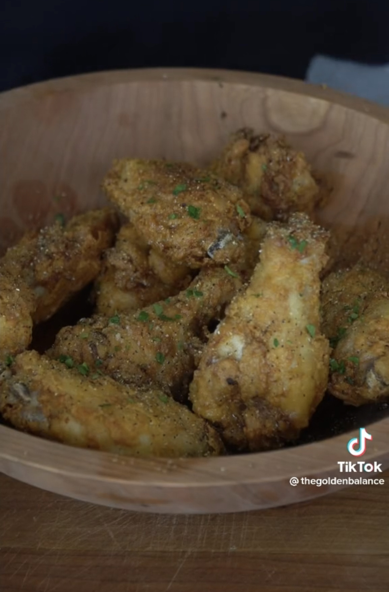

@thegoldenbalance's Lemon Pepper Wings

The Best Lemon Pepper Wings, and according to Ahmad, the only lemon pepper wing recipe you'll ever need.
The recipe is a no brainer and the end result is a crispy, juicy, and tangy chicken wing.
Follow the steps below for the best wingasm you could ever imagine.
Ingredients
Chicken Wing Marinade
- 2 lbs chicken wings
- 1/4 cup mustard and hot sauce
- 1 tbsp lemon pepper seasoning
Dry Batter
- 2 cups flour or chicken fry
- 1 tbsp lemon pepper seasoning
Sauce
- 3 tbsp Butter
- 1/4 cup of honey
- Juice of one lemon
Instructions
- In a large bowl, toss your chicken wings in along with
the mustard, hot sauce, and lemon pepper seasoning.
Incorporate the ingredients together and marinade for at least 30 minutes
or like @thegoldenbalance says, "until you lose patience".
- Preheat your frying oil to 315 F
- In a separate bowl add the flour, or chicken fry along with
the lemon pepper seasoning. Start coating your chicken wings thoroughly in the dry batter
ensuring the wings are coated properly.
- Now it's time to fry your wings, for the drums allow them to cook for 5-7 minutes,
as for the flats allow 4-6 minutes. Place them on a wire rack to rest.
- We can now move on to the sauce, start by melting the butter in a pan and afterwards add the honey,
then squeeze some lemon juice and kill the heat.
- It's time to double fry to ensure crispy goodness, crank your oil up to 365 F
and toss your wings in for just a couple minutes until their crispy and golden.
- Place those juicy wings into a bowl and get them lost in the sauce, sprinkle just a dash more of lemon pepper
and garnish with some cilantro. Now Bismillah!